A long-endurance XLUUV such as the Boeing Orca must survey large areas without GPS, while its position estimate degrades and while it shares the water with seabed obstacles, marine life and other vehicles. Our earlier report described a layered NumPy RL stack for this problem (physics, INS/DVL/depth sensing, particle-filter localization, a safety shield and an ES-trained policy) and, separately, Stonefish [4] scenarios in which the Orca surveys a rock field or crosses the lanes of other survey submarines under a reactive controller. Its future-work section named the missing link: the ROS 2 bridge existed only as a skeleton written for Gazebo and the UUV Simulator [5], and the RL policy had never driven the high-fidelity vehicle. Section II explains, with real incidents, why this problem calls for a learned policy that senses obstacles itself, wrapped in hard safety rules and tested in simulation first.
This paper closes that gap. Its contributions are:
Section II gives the real-world motivation, Section III the architecture and Section IV the Gazebo-to-Stonefish migration. Section V covers the vehicle model, Section VI the RL formulation, objective and training, Sections VII and VIII the offline and closed-loop evaluation, and Sections IX-XI limitations, future work and conclusions.
Four kinds of real situation shape the problem. Each one is answered by a specific element of the proposed method (Fig. 1).
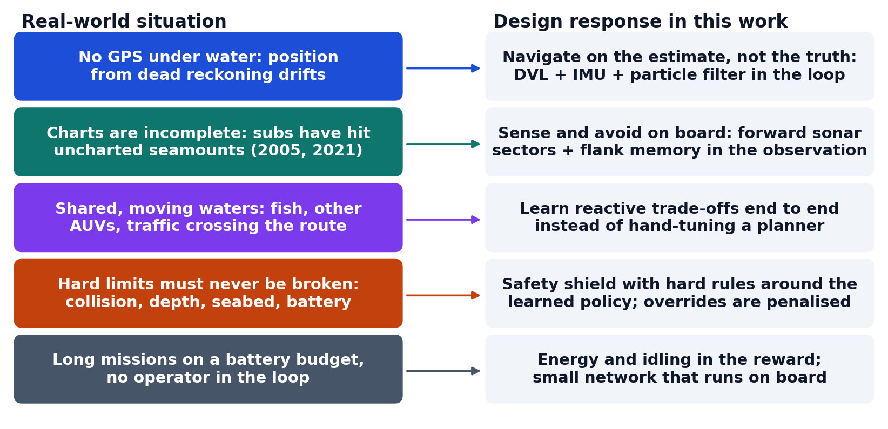
Three choices follow. First, reinforcement learning: a classical potential-field planner on the same inputs collides in 28% of held-out missions, against 13% for the learned policy (Section VII). Second, a safety shield around the policy, because learned behaviour is not a guarantee. Third, simulation first: collisions cannot be tested on a 50-tonne vehicle, and Stonefish provides realistic hydrodynamics and the vehicle's own sonar, DVL and pressure sensors, so the policy can be judged on the sensing it would really have.
Fig. 2 shows the integrated system. The Stonefish C++ application owns the physics: it loads the Orca and the world from the scenario files, steps Bullet physics at 300 Hz and runs a ROS 2 node of its own. The Python RL node runs at a fixed 1 Hz on the simulation clock that Stonefish publishes. Each step it updates the navigation estimate, computes sonar features, builds the observation, evaluates the policy, applies the original action scaling and the safety shield, and publishes a physical setpoint (surge speed, yaw rate, depth rate).
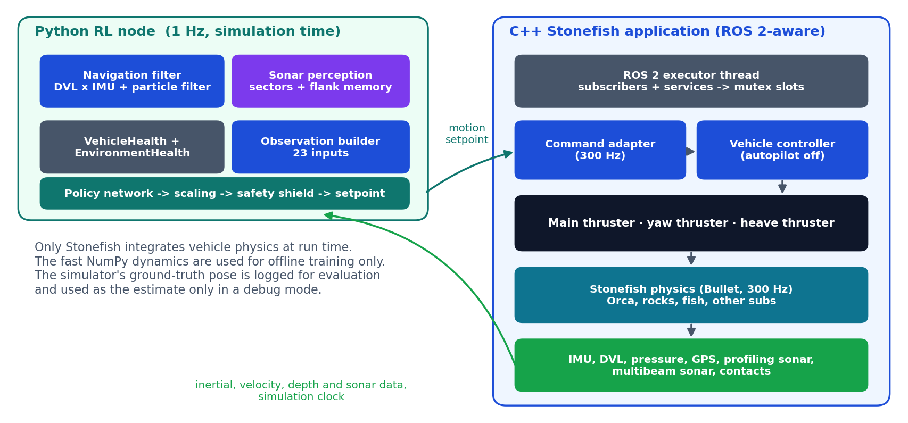
Inside the executable, the ROS 2 executor spins on its own thread; its callbacks only copy data into mutex-protected slots. Stonefish already runs physics on a separate thread from rendering, and the physics callback reads those slots, runs the command adapter and the existing vehicle controller (with its survey autopilot switched off), and publishes sensor data. No Stonefish object is touched from the ROS thread, and ROS 2 never blocks the simulator. The NumPy vehicle dynamics are used only for offline training; at run time Stonefish is the only physics.
Every Gazebo-specific concept in the original bridge was traced to its source and replaced with the corresponding Stonefish mechanism rather than renamed (Table I). Two examples show why renaming would have been wrong. The old bridge computed depth as (P - 101325)/(rho g), but the Stonefish pressure sensor reports gauge pressure, so the vehicle would have appeared about 10 m too shallow. And a velocity command message has no consumer in Stonefish, because the Orca has no velocity controller, only force actuators.
| Old assumption | Stonefish replacement | Data over ROS 2 |
|---|---|---|
| Ground-truth pose fed into the control loop | simulator odometry, labelled ground truth; used only for evaluation or in debug mode | ground-truth odometry (100 Hz) |
| Depth = (pressure - 1 atm)/ρg | gauge pressure: depth = pressure/ρg | pressure (10 Hz) |
| Velocity command to a simulator plugin | speed / yaw-rate / depth-rate setpoint, converted to thruster forces in C++ | motion setpoint (1 Hz) |
| Per-thruster plugin messages | direct thruster forces, kept for manual tests | thruster forces |
| Fixed heading, zero-velocity placeholders | measured heading and DVL velocity into the particle filter | attitude (100 Hz), DVL (10 Hz) |
| Simulator reset / pause services | the robot is re-spawned at its start pose on the physics thread | reset service |
| Spawning the model into the world | the Orca is loaded from the scenario description | - |
| Procedural risk map | risk from the profiling sonar and DVL altitude; terrain richness from the multibeam | sonar scans (10 / 2 Hz) |
Frames were verified in the Stonefish source rather than taken from comments. The world frame is NED and the body frame FRD. Odometry and DVL velocities are body-frame, and the DVL is mounted pitched by 180 degrees, so its x and z axes are reversed relative to the body. Topics are published in these NED/FRD frames. Because the Python environment already integrates x += v cos(psi) and y += v sin(psi), its coordinates are NED as well, and no conversion is needed between the simulator and the policy. Stonefish's full scenario restart rebuilds the scene from the physics thread and is not safe at run time, so a reset re-spawns the robot at its start pose and clears the adapter's integrators.
The first closed-loop test showed the Orca pitching and then rolling over even while stationary. Reading Stonefish's own mass properties exposed the cause: with a solid composite sail, the centre of gravity sat 0.05 m above the centre of buoyancy, so the hull was statically unstable. The original survey demonstration capsized the same way within about 35 s (Fig. 3). We made the sail and mast syntactic foam and moved the removed mass into an internal keel ballast, positioned so that CG and CB align fore-aft. Net buoyancy is unchanged (+42 kg), and the CG now lies 0.084 m below the CB. The same procedure made the smaller survey submarines neutral; they had been 237 kg heavy.
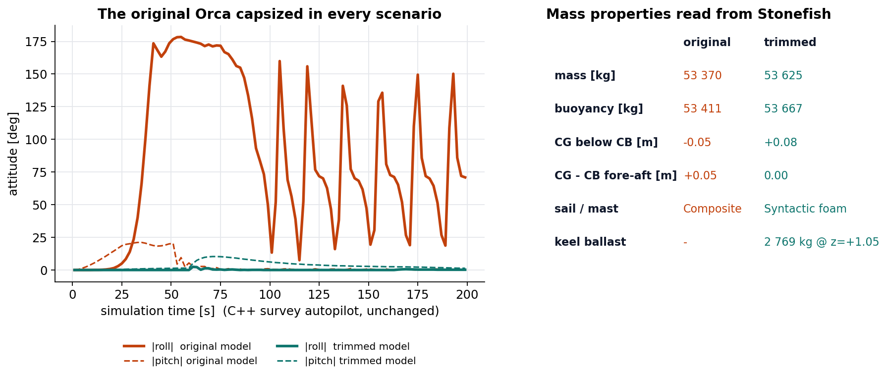
The DVL never achieved bottom lock. Specifying only a velocity range leaves the altitude limit at Stonefish's default of about 1e30, and the sensor then ray-marches ceil(1e30) steps, which overflows to zero. An explicit altitude range fixes it. Stonefish's sensor interface returns sample copies whose identifier is always zero, so the controller's multibeam coverage accepted only its first fan; samples are now de-duplicated by timestamp. Headless runs aborted because console mode refuses lights, so lights are stripped after include processing. Finally, Stonefish's scripted fish are kinematic bodies of infinite mass. When one squeezes the hull into the seabed or another hull, Bullet can diverge. A watchdog detects non-finite or implausible states, returns the Orca to its pose of about 2 s earlier, and reports the event.
Rather than assuming that an action of +1 corresponds to some force, the vehicle was identified with raw thrust steps (Fig. 4). Steady speeds of 0.37, 0.68 and 0.93 m/s at 10, 20 and 30 kN fit F = 9000 u|u| + 23500 u, which gives about 1.15 m/s at the 40 kN thruster limit. The yaw rate follows Fyaw of about 150000 r, with yaw authority falling at higher speed. The published Orca envelope (4.1 m/s, 3 deg/s) is therefore not achievable by this model, and the new policy uses the identified limits. The C++ adapter adds these feed-forwards to PI loops on DVL speed and IMU yaw rate. It integrates the depth-rate command into a depth reference, holds it with the autopilot's own gains and a DVL floor guard, and stops the vehicle if commands are older than 3 s. A 0.8 m/s setpoint is held at 0.81-0.85 m/s.
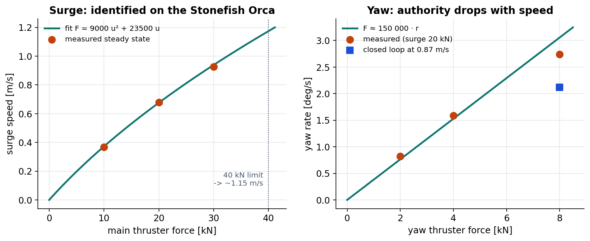
The shipped policy reaches 0 of 5 goals in its own evaluation. Probing it shows a yaw output of +1 for every heading (Fig. 5), and in Stonefish it simply circles near the start. The cause is structural: the 12-dimensional observation contains the position estimate, heading, health and context terms, but neither the goal nor any obstacle information, so no policy trained on it can steer to a waypoint or around a rock. It is kept unchanged and can still be selected at run time.
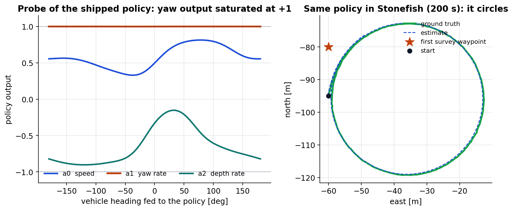
The new layout keeps the original 12 features in the same order and adds 11: the sine and cosine of the bearing to the next waypoint and its distance (from the estimated position); five profiling-sonar sector clearances measured from the bow sensor; port and starboard hull-flank clearances; and the depth error relative to the mission depth (Fig. 6). The network class is unchanged (23-64-64-3, tanh). The flank terms come from an obstacle memory. Sonar returns are placed in the world with the estimated pose and are removed only when a later beam looks through them (free-space carving) or when the vehicle is more than 60 m away. An earlier 30 s time-out caused stern strikes on rocks that had left the forward fan while the 27 m hull was still swinging past them.
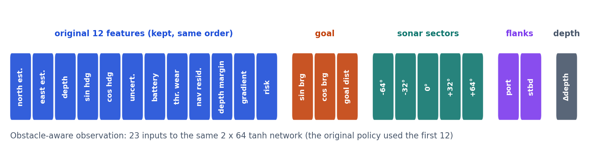
Training uses a NumPy environment at Stonefish scale, with the identified speed and speed-dependent yaw-rate limits and time constants. The hull is a 27 m x 1.3 m capsule. The world contains rock pinnacles, ridge walls, fish and traffic submarines, and the same mechanically swept profiling sonar as the model (64 steps over 160 degrees at 10 Hz, binned to 5 degrees as the ROS node publishes it). Navigation is DVL dead reckoning into the existing particle filter. Missions are chains of three goals that include short lane changes. The safety shield keeps the original depth, battery and uncertainty rules and adds obstacle-stop, obstacle-slow, seabed-floor and depth-band rules computed only from sensor-derived quantities. Each override is penalised, so the policy learns to avoid needing it (Fig. 7).
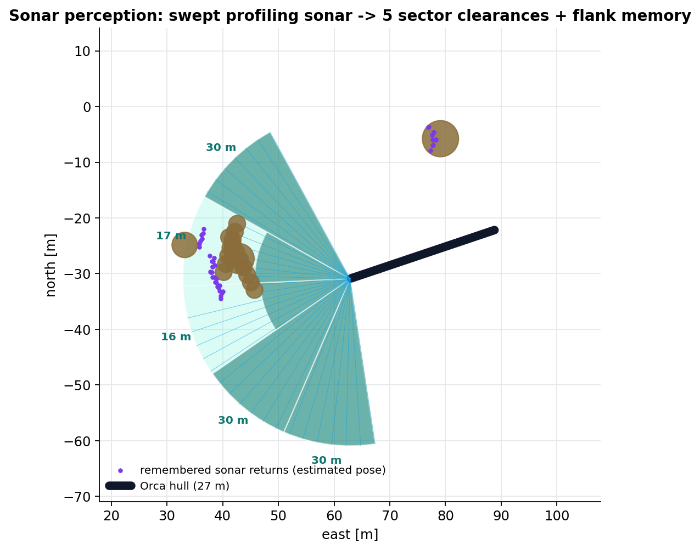
Training searches for the policy parameters that maximise the expected total reward of one mission:
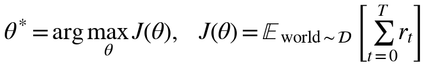
(1)Here θ = {Wk, bk} is the set of all 5,891 weights and biases of the policy network, rt the reward at step t, and the expectation is taken over the distribution D of randomly generated worlds: start pose, obstacle field, fish and traffic paths, currents and waypoints. One step lasts 1 s; an episode has three waypoints and ends at the last one, on a collision, or after T = 420 steps (7 min). Because missions are finite, the return is undiscounted. The policy is a deterministic network with two hidden layers of 64 tanh units:
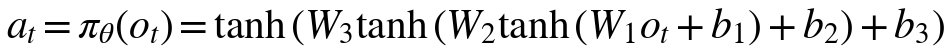
(2)Its three outputs, each in [-1, 1], are scaled to a physical setpoint using the identified limits of the Stonefish Orca (top speed 1.1 m/s, a yaw-rate limit of 0.045 rad/s that shrinks with speed, and a depth-rate limit of 0.3 m/s), and the safety shield then has the last word:
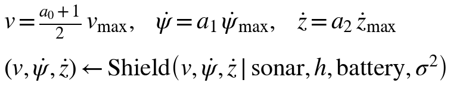
(3)The reward (4) rewards mission progress and penalises everything an operator would not want. Table II lists each term, its weight and its real-world meaning.
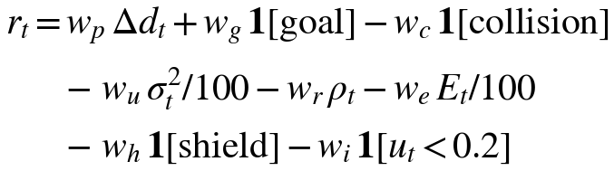
(4)| Term | Weight | Measures | Real-world meaning |
|---|---|---|---|
| Progress (Δd) | wp = 1.0 per m | drop in estimated distance to the waypoint | complete the survey |
| Waypoint bonus | wg = 200 | waypoint reached (within 10 m) | mission completion |
| Collision | wc = 300 | hull contact; episode ends | losing the vehicle |
| Uncertainty (σ²/100) | wu = 0.0025 | particle-filter spread (m²) | stay localisable without GPS |
| Risk (ρ) | wr = 0.4 | sonar proximity and low altitude, 0 to 1 | keep a safe margin |
| Energy (E/100) | we = 0.02 | watt-hours used in the step | battery endurance |
| Shield override | wh = 1.5 | the shield had to change the command | do not rely on the safety net |
| Idle | wi = 0.5 | speed below 0.2 m/s | do not stall to dodge penalties |
The weights encode priorities. A collision costs 300, more than a waypoint is worth, so no shortcut through an obstacle can pay off. The progress term gives a dense signal between waypoints, while the risk and shield terms make keeping a margin cheaper than relying on the shield. The idle penalty removes the trivial solution of stopping to avoid every other penalty. Only sensor-derived quantities enter the reward terms that depend on the vehicle's state, apart from the collision flag, so the policy is rewarded for what it can actually perceive.
ES from a random network learned too slowly, reaching 8% of goals after 50 generations. The network was therefore first trained by behaviour cloning on 111k samples from a classical potential-field planner that reads the same observation, followed by one DAgger round [6] of 25k relabelled states. This warm start minimises the mean-squared difference between the policy's actions and the planner's:
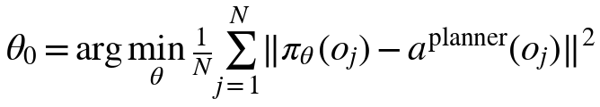
(5)ES [1] then maximises (1) directly. Each generation samples n Gaussian perturbations of the parameters, runs one set of missions per perturbed policy, and moves the parameters along the rank-weighted average of the perturbations:
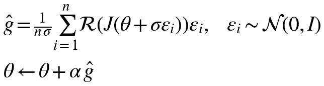
(6)Here R is a centred rank transform to [-0.5, 0.5], which makes the update insensitive to the scale of the large collision and waypoint terms. ES needs no gradient through the simulator, copes with the abrupt collision penalty, and evaluates every candidate as an independent mission, so 14 processor cores run in parallel. Settings were 200 generations, n = 48 (24 mirrored pairs), σ = 0.03, α = 0.01 and four common seeds per generation (65 min in total) (Fig. 8). Model selection used 100 validation seeds. An additional 80-generation fine-tune reached 86% of goals but had 16% collisions, against 8% for the selected policy, and was rejected.
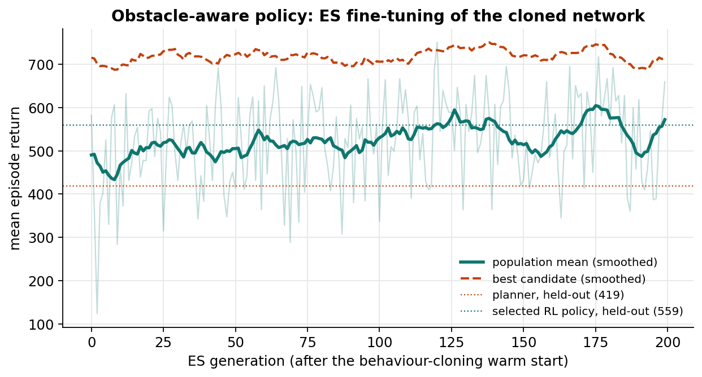
Table III compares the three controllers on 100 episodes whose seeds were used for neither training nor model selection. All three use the same observation and the same safety shield.
| Metric | Planner | BC only | RL (BC+ES) |
|---|---|---|---|
| Goals reached | 68% | 67% | 82% |
| All three goals | 46% | 47% | 63% |
| Collision rate | 28% | 32% | 13% |
| Median min. clearance (m) | 1.7 | 1.7 | 5.9 |
| Mean episode reward | 419 | 399 | 559 |
| Mean shield steps | 1.5 | 1.9 | 8.8 |
Behaviour cloning reproduces the planner, collisions included. ES then cuts the collision rate by more than half and raises goal completion, mainly by keeping larger margins: the median closest approach grows from about 1.7 m to 5.9 m, and the policy accepts more brief shield interventions while doing so. Fig. 9 shows a typical case: the planner cuts a corner into a rock cluster, while the RL policy slows, swings wide and completes all three goals.
Fig. 10 breaks the return into the reward terms over 40 held-out missions. The RL policy earns more waypoint bonus (430 against 355) and more progress (130 against 109), and halves the collision penalty (-60 against -120). It pays somewhat more for shield overrides, because it accepts brief interventions to keep moving. The uncertainty and energy terms are small at this scale (flat seabeds and seven-minute missions), which is consistent with their role as tie-breakers rather than drivers.
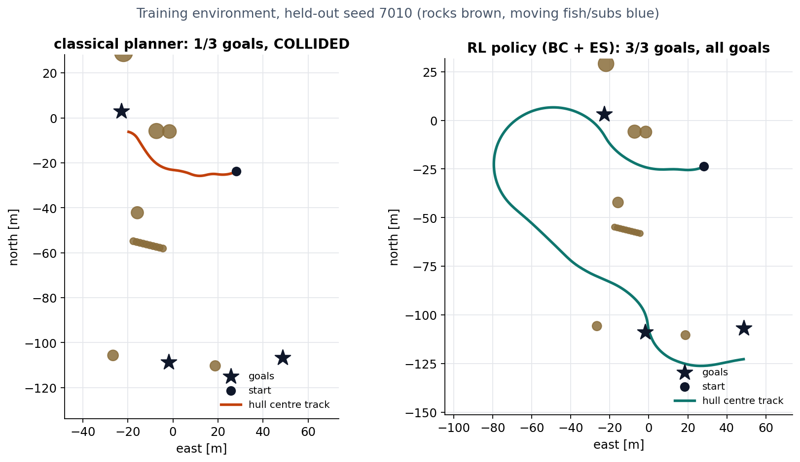
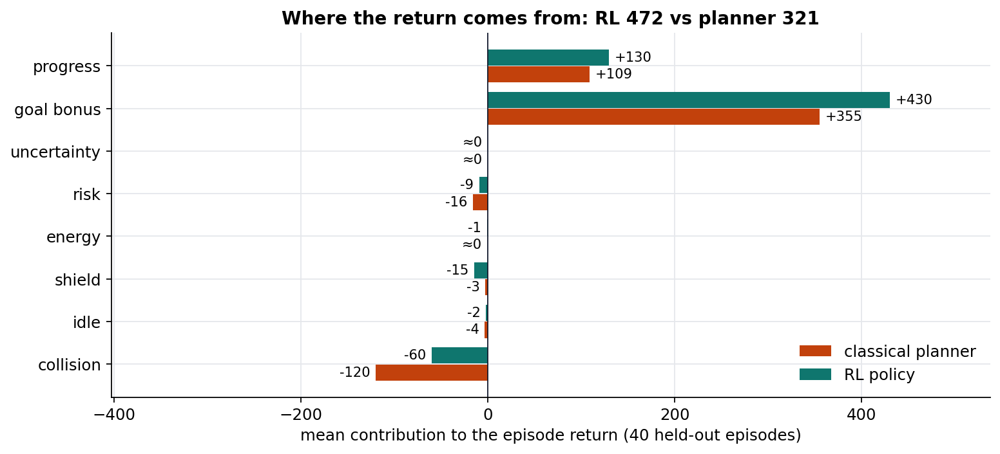
The base world, which previously contained only the vehicle, now has 12 rock pinnacles and two ridge walls rising from a 30 m seabed through the 12 m cruise depth, two boulders, three fish schools of three fish each looping at about 2 m/s, and a traffic submarine running its own avoidance across the Orca's lanes (Fig. 11). The survey world (rocks, pillars, wrecks and fish over an 18 m seabed) and the multi-submarine world are unchanged apart from the model fixes. Long survey legs are split into waypoints at most 80 m apart. A waypoint that the sonar shows to be occupied, or whose leg times out, is skipped, as an AUV mission executive would do.
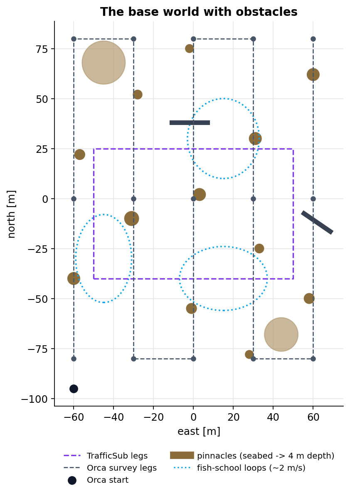
| World | RL waypoints | RL contacts (static/fish/sub) | RL resets | Autopilot waypoints | Autopilot contacts |
|---|---|---|---|---|---|
| Obstacle | 14/15 (+1 skipped) | 6/5/0 | 0 | 9/10 | 15 |
| Multi-sub | 8/9 (+1 skipped) | 0/0/4 | 1 | 6/6 | 17 |
| Survey | 4/12 (+6 skipped) | 23/44/0 | 15 | 3/12 | 7 |
Table IV summarises the closed-loop runs (1800 s limit, three times real time, realistic onboard navigation). In the obstacle world the policy completes the survey in 1485 s, reaching 14 of 15 waypoints and skipping the one that lies on a pinnacle. Its track detours around pinnacles, ridges and boulders on every lane (Figs. 12 and 13). Mean navigation error is 0.64 m over 25 minutes (Fig. 14). Of its contacts, the static ones are grazes in tight passes and the rest are scripted fish crossing the hull. In the multi-submarine world it reaches 8 of 9 waypoints with four brief touches of another submarine. The original autopilot, which navigates on ground-truth odometry, reaches comparable waypoint counts, with 15 and 17 contact events in the same two worlds.
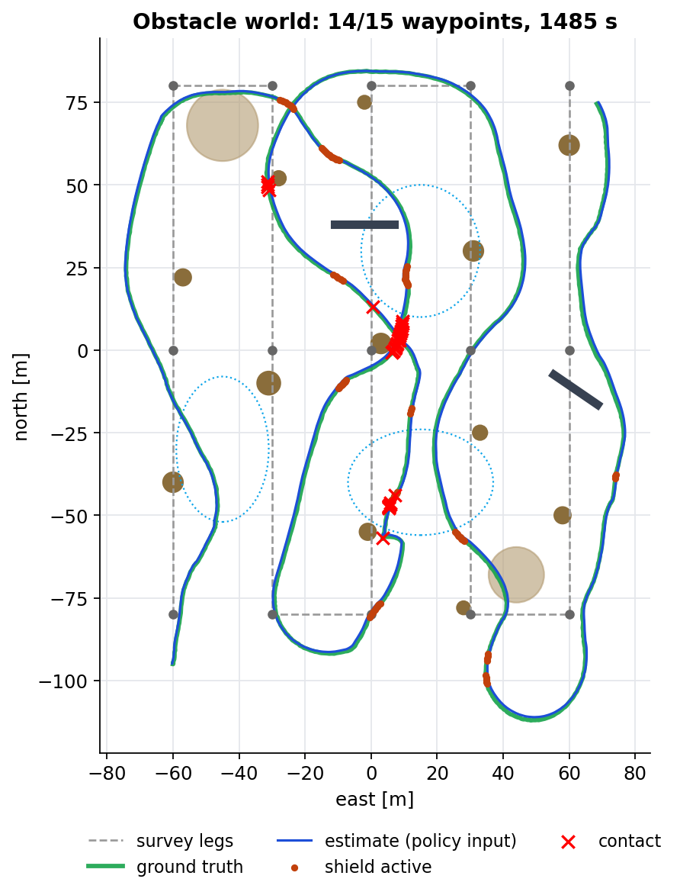
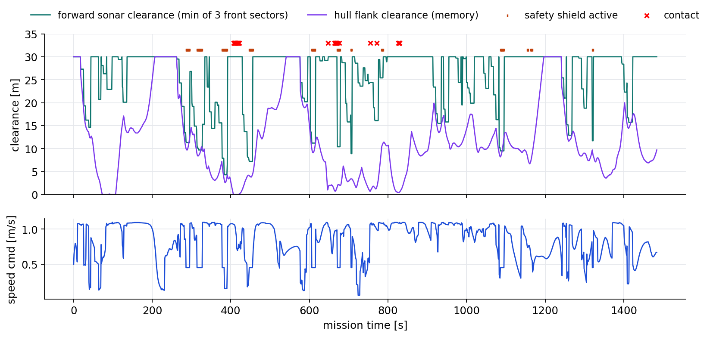
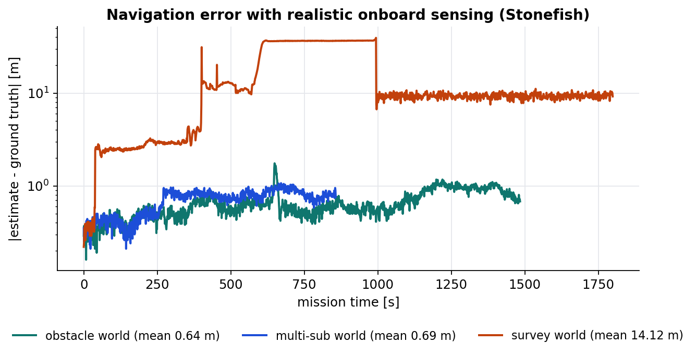
The survey world remains unsolved. The policy reaches 4 of 12 waypoints and the autopilot 3. The world is a 90 m x 70 m box with lanes 23 m apart for a 26 m hull, and its large kinematic fish repeatedly press the hull into the seabed, causing 15 physics resets. Because each reset moves the vehicle without any sensor seeing it, the realistic estimate drifts and later legs time out. This is a property of the scripted scene rather than of the integration, but it marks the limit of the current policy and sensing (Fig. 15).
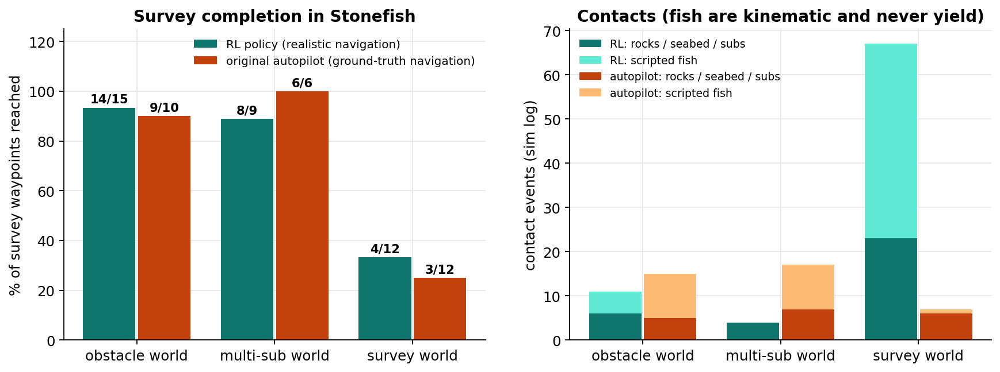
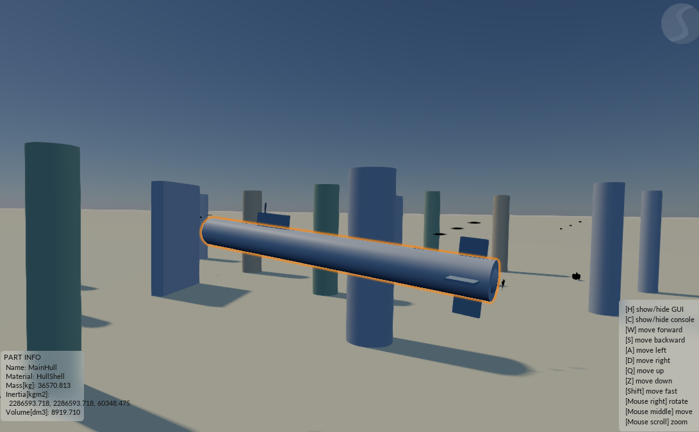
The RL navigation stack and the Stonefish simulator are now one system. The policy drives the real Stonefish actuators through ROS 2, using only real Stonefish sensors, while the existing localization, health and safety layers are preserved. The shipped policy was shown to be structurally unable to navigate, and a sonar-aware policy of the same architecture, trained with behaviour cloning and ES, reaches 82% of goals with 13% collisions offline, against 68% and 28% for a classical planner. In Stonefish it completes the obstacle-world and multi-submarine surveys under realistic navigation. Three defects that affected every earlier Stonefish scenario were fixed along the way. The dense survey field, with its non-yielding scripted fish, remains the next target.
The authors thank their Project Guide, Dr. D. Palmani, for guidance and feedback throughout the design, implementation and evaluation of this project.